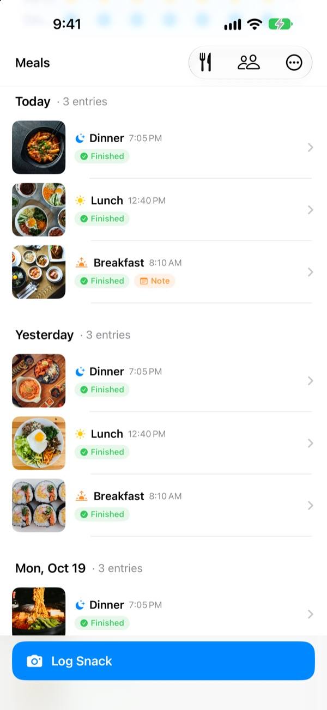
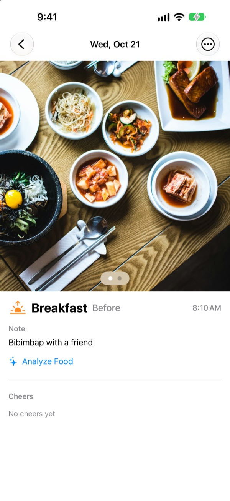
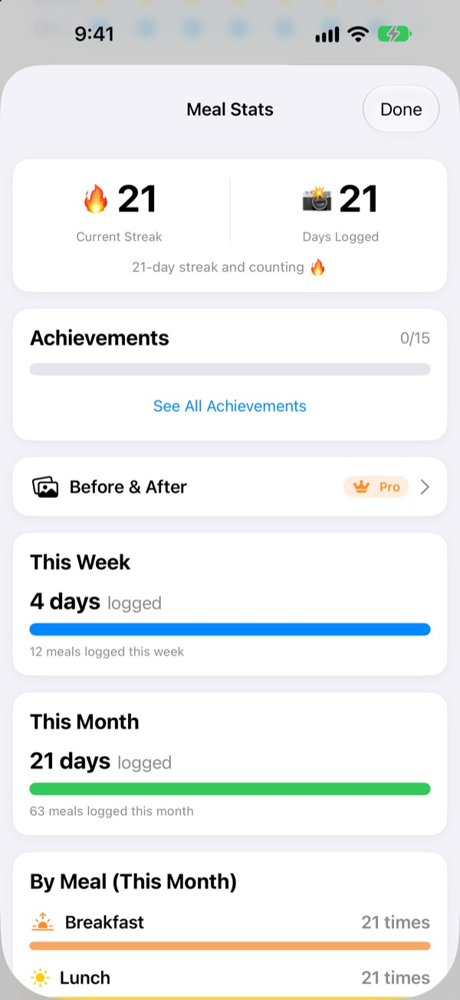
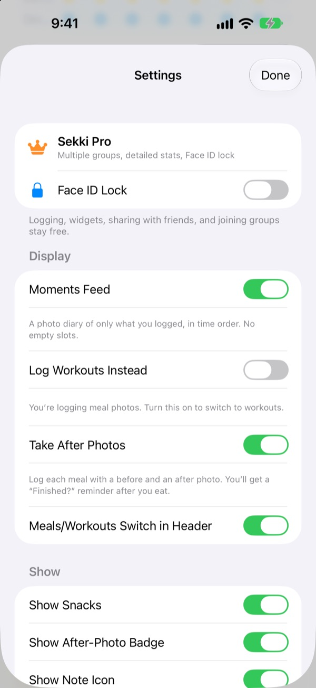

One photo before you eat.
That's the whole log.
Sekki looks at when you took the photo and files it under breakfast, lunch, dinner or a snack. Log just one meal a day and your streak keeps going.
Logging, stats, widgets and sharing with friends are all free.

Try logging a meal
Pick a time and tap the log button. Just like in the app, the button already names the meal for that time.
Ever quit a food diary after three days?
Skip breakfast once, forget dinner twice, and the empty boxes start nagging until you delete the app. Sekki has no empty boxes. Only the meals you log stack up in order, and a single photo makes the day count.
Snap it, and the meal is sorted
Sekki files each photo under breakfast, lunch, dinner or a snack based on when you took it. Add before and after photos, log without a photo, or jot down a note.
It recognizes the food on your device, for free, and your photos never leave your phone.

A log that never shrinks
One meal a day keeps your streak alive, and your total days logged never go down. Weekly and monthly stats show how many days and meals you logged instead of a completion score.
Achievements like 7-Day Streak and Early Bird pile up along the way.

Only the meals you choose, without opening the app
Pick which meals you want reminders for and set times that fit your day. Take a before photo and you can mark the meal finished right from the notification.
Log with the Action button, Siri, Shortcuts or a Home Screen widget, and add friends by code to cheer each other on with emojis and comments.

Three steps to start
- 1
Choose your meals
The first time you open Sekki, it asks which meals to remind you about. Change them anytime in Settings.
- 2
Snap before you eat
The log button already shows the meal for the current time. Tap it, take the photo, done.
- 3
Tap when you're done
Hit Finished in the notification or widget, or add an after photo.
Logging without opening the app
- Notification
- After a before photo, mark the meal Finished right from the alert
- Home Screen widget
- See today's count and the meal you're eating, then tap Finished
- Lock Screen widgets
- Rectangular, circular and inline views of today's log
- Action button · Siri · Shortcuts
- Log Finished with one press or one sentence
- Save to Photos
- Turn it on in Settings to keep separate Sekki albums for meals and workouts
- Workout mode
- Workouts are kept apart from meals, with this month's count at a glance
The Finished button on the widget needs iOS 17 or later.
Logging is free. Sekki Pro goes deeper.
Free
- Photo logging with automatic meal sorting, before and after photos, notes
- Streaks, total days logged, weekly and monthly stats, achievements
- Reminders for the meals you choose, Finished without opening the app
- Widgets, Action button, Siri and Shortcuts
- Sharing meals and workouts with friends, emoji and comment cheers
- Create one group, join as many as you like
- On-device food analysis
Sekki Pro
- Multiple groups for family, work or your gym crew
- Compare meals from a few weeks ago side by side with today
- See the foods you eat most
- Lock the app with Face ID or Touch ID
Yearly or monthly subscription, or a one-time lifetime purchase
Subscriptions renew automatically unless canceled at least 24 hours before the period ends. Cancel anytime in Settings > Apple Account > Subscriptions. Terms of Service: m1zz.github.io/RoutineCamera/en/terms.html
Questions
Where are my photos stored?
On your device. Turn on Save to Photos Automatically in Settings to also keep them in the Sekki albums in Photos. While Share My Meals is on (it's on at first), they're uploaded to iCloud so the friends you add can see them. You can turn it off in Settings > Account & Sharing.
How do I add friends?
On the Friends screen, share your six-character friend code and enter your friend's code. You can paste several codes at once, separated by commas.
How do I cheer on a friend?
Open a friend's meal and leave an emoji or a short comment. If they haven't logged a meal yet, tap the empty slot to send a gentle nudge.
Does missing a meal break my streak?
No. Log any one meal that day, snacks included, and the streak continues. Even if you skip a whole day, your total days logged never go down.
I'm not getting notifications.
Check that notifications are allowed for Sekki in iOS Settings > Notifications, and that your device is signed in to iCloud. You can change your meal reminder times in the app's Settings.
Does food analysis send my photos to a server?
No. It runs on your device, so your photos never leave your phone. It's free with no limit.
How do I delete my account and data?
Go to Friends > Account > Delete Account. Your account and the meal data stored on the server are deleted and can't be recovered. If anything goes wrong, just email us.
How do I cancel my subscription?
In Settings > Apple Account > Subscriptions. It renews automatically unless you cancel at least 24 hours before the period ends. Lifetime is a single charge.
Bug reports, feature ideas and account questions: email leeo@kakao.com or DM @lee25_ios on Instagram. We usually reply within a day or two.